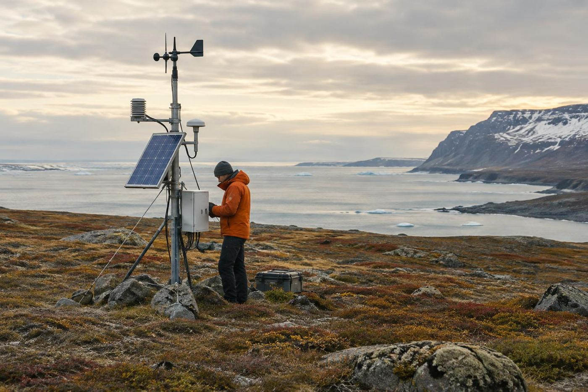

Environment and ESG · Northern Sea Route
ESG emissions monitoring on the Northern Sea Route
Estimating CO₂ and CH₄ emissions on Northern Sea Route lanes from AIS and Earth observation data.

- Industry
- ESG, maritime logistics
- Data
- AIS, Earth observation
- Indicators
- CO₂, CH₄
- Approach
- Model + methodology
Task
Obtain a verifiable emissions estimate on Arctic routes where direct measurement is unavailable.
Result
Emissions monitoring on Northern Sea Route lanes using AIS and Earth observation data. Metrics being refined.
Draft case write-up: details to be confirmed with the founder, NDA limits to be checked
Verdicts by process
| Process | Verdict | Why |
|---|---|---|
| Methane detection from satellite data | AI | Weak signal, large image volume |
| Emissions calculation under the approved methodology | No AI | Full reproducibility required |
| Estimation from AIS tracks | Hybrid | The model reconstructs operating modes, the methodology calculates |

Start with a conversation, not a budget
45 minutes on your context and questions. You leave knowing how much diagnostics you actually need.